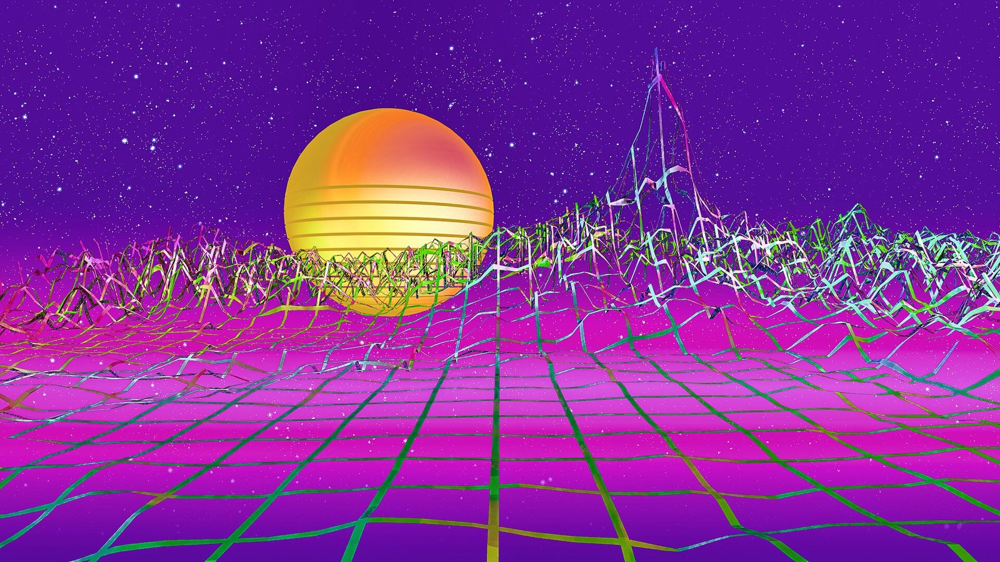

References / Illustration / 371
Vaporwave wallpaper (Mike Grauer Jr)
A free 3D-rendered desktop wallpaper: a striped orange sun over a magenta plain crossed by a warped ribbon grid, under a starry violet sky.
- Source
- Flickr: Mike Grauer Jr
- Creator
- Mike Grauer Jr
- Made
- March 28, 2018 (date given on Commons)
- Styles
- Vaporwave (agent-proposed, not yet reviewed by a person), Synthwave (partial fit; agent-proposed, not yet reviewed by a person)
- Moods
- Dreamlike, retro, saturated
- Evidence
- Inspected a 1920 × 1080 rendering of the 7680 × 4320 original through Wikimedia Commons and stored a reduced copy.
- Reviewed
- Rights
- Open license, stored. License: CC-BY-2.0. Rights policy

Context
The author’s description reads: “A new Vaporwave wallpaper! It is free and put under Creative Commons.” The CC BY 2.0 license was confirmed by Commons’ Flickr review bot on December 14, 2023. Wikimedia Commons.
Observed
- The upper half is a flat violet sky full of small white stars.
- A large orange-to-yellow sphere with thin horizontal gaps across its lower half sits left of centre on the horizon.
- The ground is a magenta plain, lighter toward the horizon, covered by a grid of twisted ribbons in green, teal, and pink that rises into jagged peaks at the right.
Why it belongs
A clean example of the grid-and-sun motif that vaporwave shares with synthwave. The rubric separates them by the sky: violet and pastel here, black in synthwave.
Borrow
Cut three or four horizontal gaps through the lower half of a sun disc to get the striped-sun motif without a separate stripe layer.
Measured
Machine-extracted by tools/image-traits.py on . Full measurement.
- Mean chroma
- 0.51
- Palette
- #530e9a 36%
- #cd11ba 9%
- #5c1e99 4%
- #d239cd 4%
- #900fb0 3%
- #d64cd9 3%
- #ba11be 3%
- #6e0aa6 3%

